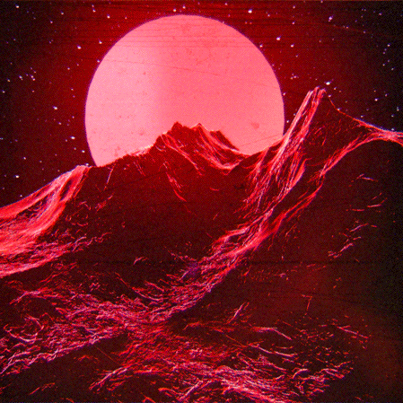
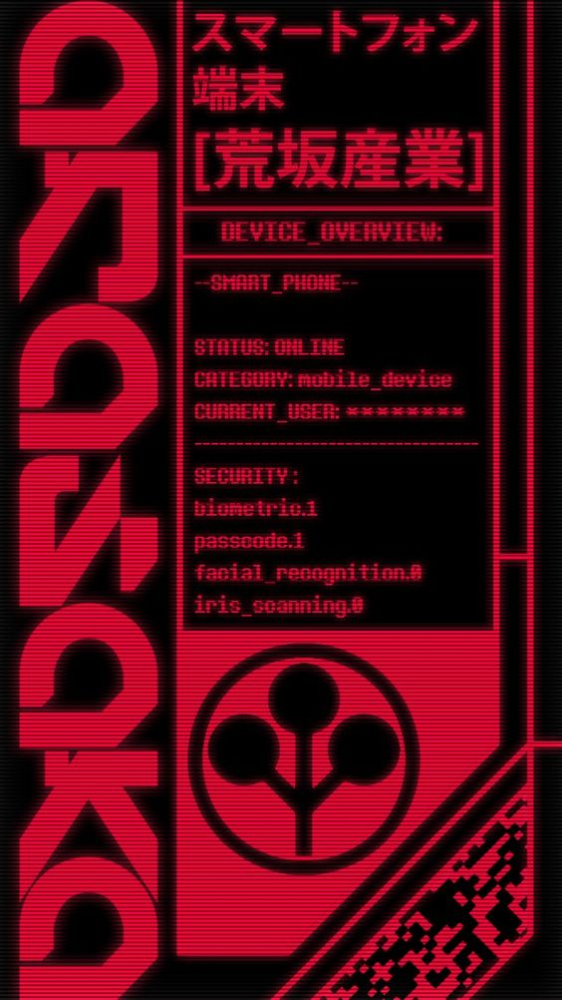
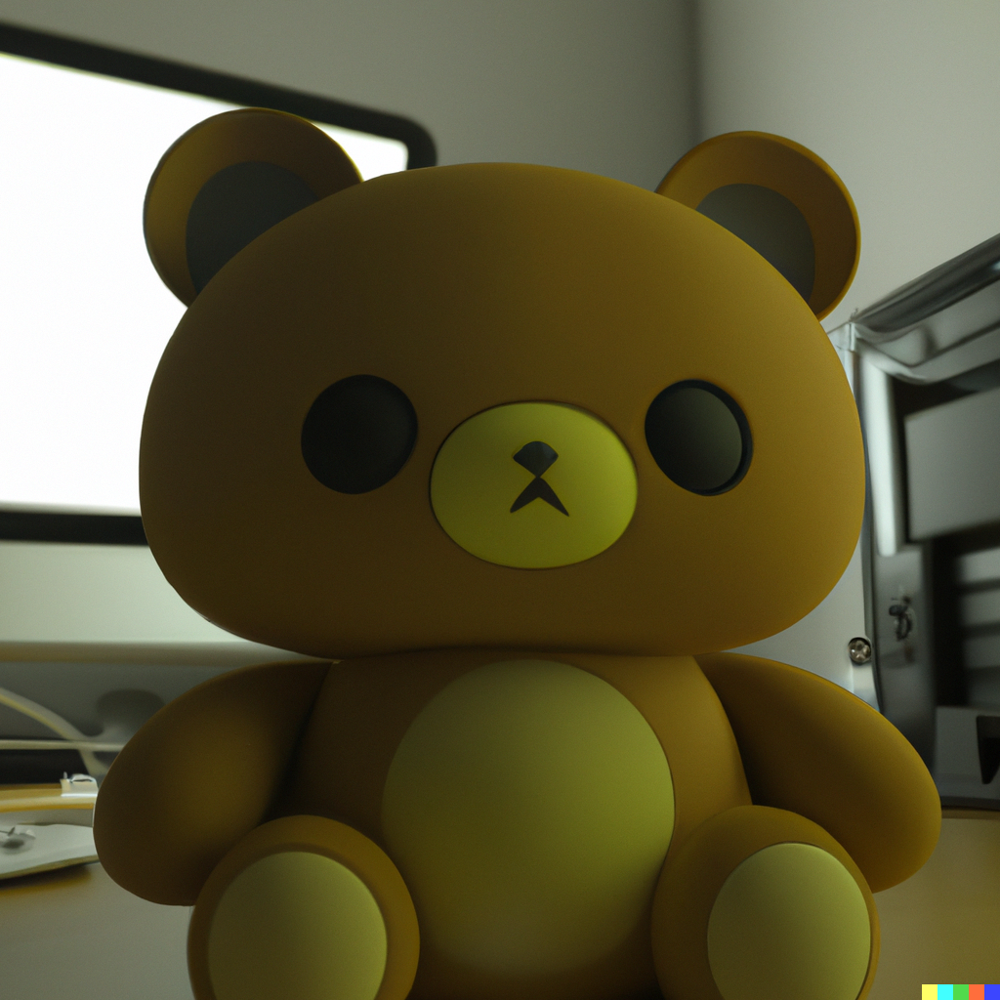
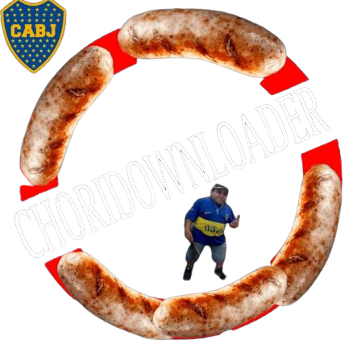
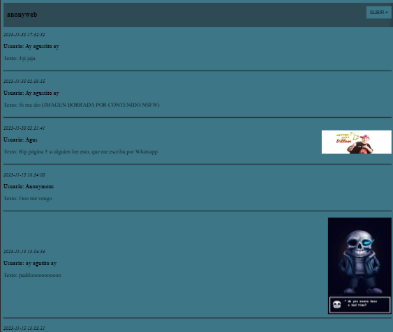

Young programmer, hacking lover, web developer


Conoce más de mi en mi perfil de Github


Aqui unicamente tendre en cuenta mi proyecto de "rilakkumabot", pero dentro de mi perfil se encuentran otros bots completos (aunque son proyectos personales)

Este bot integra funciones como la descarga de videos de YouTube, "doxxing" usando una herramienta osint para obtener el nombre completo de una persona con su documento y viceversa, "doxxing" usando un numero de telefono como base, y un mini script para que el host quede prendido todo el dia
Ver el codigo fuente
Choridownloader es una pagina funcional para descargar videos de YouTube. El front-end es simple, feo y basico porque me enfoque mas en el back-end (quiza mas adelante lo retoque un poco)
Ver el codigo fuente
anonyweb es un proyecto que hice en un dia, donde las personas pueden publicar texto e imagen de forma anonima (al gran estilo 4chan). El proyecto lo hice para mi practica en un back-end sencillo, utilizando flask, almacenando los datos en un json y luego al cargar la pagina leer la data guardada
Ver el codigo fuente